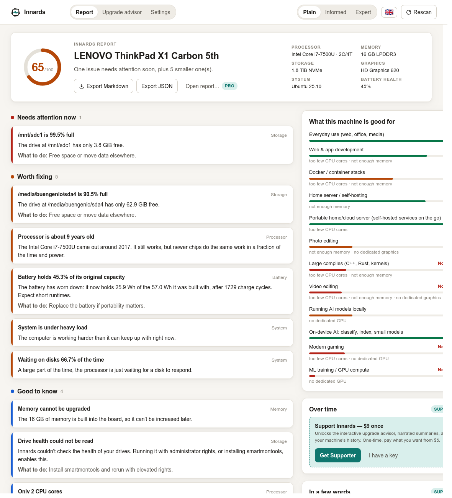
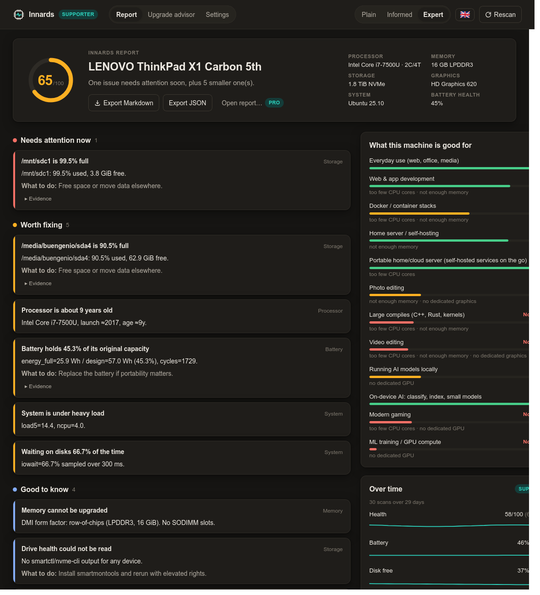

Everything you need to cover Innards.
Quote freely. Screenshots are CC0. Review builds and license keys for reviewers on request.
One-liner
Innards looks inside your computer and tells you, in plain language, what's wrong, what it's still good for, and what's actually worth buying.
Short description
Innards is a free, open-source desktop app for Linux, macOS and Windows that inspects your machine — CPU, memory, drives, battery, thermals — and explains what it finds at the level of detail you choose, in your language. It scores what the computer is still good for and, optionally, recommends upgrades that are worth the money.
Long description
Most hardware tools show you numbers. Innards tells you what they mean.
Run it and in about a second you get a health score, a short verdict, and a bulleted report sorted by what needs attention now, what's worth fixing, what's good to know, and what's working well. Every item can be read three ways — plain for someone who doesn't want jargon, informed for a comfortable user, expert for people who want percentage_used=1% and unsafe_shutdowns=69 with the raw evidence attached. Switch language and level at any time; the same findings re-render instantly.
Below the findings, Innards answers the question people actually have about an ageing machine: what is it still good for? Ten workloads, from everyday use to running AI models locally, each with a grade and the limiting factor named.
The upgrade advisor asks five questions and returns a ranked, costed list — free software fixes first, and honest when the answer is "keep it" or "this chassis can't get you there." A Pro tier adds where to buy each item new, refurbished or used.
Nothing leaves the machine. No account, no telemetry. Rust + Tauri, MIT licensed.
Key facts
- Product
- Innards
- Category
- System utility / hardware diagnostics
- Platforms
- Linux (deb, AppImage, rpm), macOS (dmg, Apple silicon + Intel), Windows (msi, exe)
- Price
- Free core. Supporter $9 one-time (pay what you want from $5). Pro $29/year. Team $4 per machine/month or $39 per machine/year (minimum 5 machines). Enterprise custom, from $2,500/year.
- License
- MIT. Paid features are gated by offline license keys, but their code is public.
- Tech
- Rust engine, Tauri 2 shell, Svelte 5 UI. About 8 MB download on Linux.
- Phones
- In progress: a command-line build for postmarketOS and Termux (a rooted OnePlus 6T as a pocket server is a real test case). Not shipped yet.
- Languages
- English, Spanish. More via a single JSON file; translations welcome.
- Privacy
- No network access in the free tier. Narrated summaries call the Claude API with the user's own key and send only rendered findings.
- Website
- innards.app
- Developer
- Eugene Trotsan, independent
- Origin
- Ubuntu 25.10 on a 2017 ThinkPad X1 Carbon: Innards' own first patient
Why it exists
Innards started as a debugging session: a ThinkPad that hung on reboot and couldn't write its own logs. Working through journalctl, nvme smart-log and /sys by hand surfaced a drive that had been at critical temperature for 4½ hours of its life, 69 unsafe shutdowns, a battery at 45%, and — the real culprit — no swap at all on a 16 GB machine running a home server. None of that was hard to find. All of it was hard to read. Innards is that afternoon, turned into a tool anyone can run.
What makes it different
- Three reading levels of the same report. Not a "simple mode" that hides things: the same findings, phrased for three audiences, with the raw evidence one click away.
- "What is it still good for?" Capability grades per workload, with the limiting part named.
- An advisor that will tell you not to spend. Free fixes rank first. Soldered RAM and no GPU slot are called out as the reason to change machine, not a part.
- Rules, not a black box. Every finding is a small, readable rule with a threshold you can check in the source. The optional AI narration only rephrases findings the rules already produced.
- Local by default. The report never leaves the machine unless the user exports it.
Quotes you can use
"Every hardware tool I'd used showed me numbers. I wanted one that would tell my mother what the numbers meant, and tell me the raw values in the same window."Eugene Trotsan, creator
"The best upgrade advice is sometimes 'don't'. Innards will say that."Eugene Trotsan
Suggested angles
- Linux: a Rust/Tauri utility that reads
/sys,/proc, DMI, hwmon and SMART without root, explains them, and packages as deb/AppImage/rpm. The expert level is written for your readers. - General tech: "Is my old laptop still good for anything?", answered per workload, with an upgrade advisor that's honest about when the answer is no.
- Privacy: hardware diagnostics that never phone home; the only network feature is opt-in and uses your own API key.
- Open source: MIT code with paid tiers gated by offline Ed25519 keys, a small experiment in sustainable indie desktop software.
Screenshots
All 1180 px wide, PNG, CC0. The machine in every screenshot is real: a 2017 ThinkPad X1 Carbon 5th gen used as a home server.


{kind=link}

{kind=link}

FAQ
Does it need root / administrator?
No. Everything except SMART drive health reads without elevated rights. SMART is an opt-in checkbox that triggers the normal system password prompt.
Does it send my data anywhere?
No. The free app makes no network requests. The Supporter narration feature is opt-in and sends only the already-rendered findings to the Claude API using a key you provide.
Why pay if it's open source?
You don't have to. The paid tiers fund development and unlock convenience features (advisor, narration, shopping links). The code for them is in the same repo.
What does the AI feature actually do?
It rephrases the structured findings into a short narrative. It does not diagnose anything itself; the rules do.
Will it run on my Raspberry Pi / VM / Steam Deck?
Linux builds run anywhere WebKitGTK does. VMs are detected and battery/thermal findings are suppressed. A command-line build for aarch64 (postmarketOS and Termux on phones) is in progress; ARM desktop builds are on the roadmap.
How do license keys work?
Offline Ed25519-signed keys, verified locally. Supporter keys never expire and are never checked online. Pro and Team subscription keys within 30 days of expiry contact innards.app/api/license/refresh once at startup for a renewed key, sending only the key itself.
How do I add my language?
Copy crates/innards-core/i18n/en.json, translate, add one line to i18n.rs. A test checks you didn't miss a string.
Contact
Eugene Trotsan — eugene.trotsan@gmail.com. Review builds and license keys for reviewers on request.